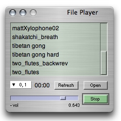

ixiQuarks : FilePlayer

| File Player |
| The File Player is a simple tool that plays sound files from the hard disk. It does not read the sound into a buffer in RAM, but streams the sound from the hard disk. The default folder of the sounds is the ixiquarks folder. The player plays out on any channel and if you record a new sound whilst the player is open, you can refresh the list of sounds with the refresh button. The "Open" button imports any sound from the disk into the list of sounds. The new sound will be added at the end of the list of sounds. |